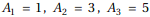
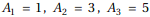
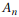
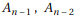
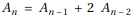
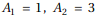
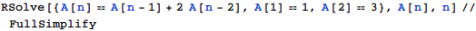
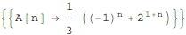

縦2、横nの長方形の部屋をこれらのタイルで過不足なく敷きつめることを考える。
そのような並べ方の総数を
このとき以下の問いに答えよ。
東京大学 1995年 理科 第3問
問題
二辺の長さが1と2の長方形と一辺の長さが2の正方形の2種類のタイルがある。
縦2、横nの長方形の部屋をこれらのタイルで過不足なく敷きつめることを考える。
そのような並べ方の総数を で表す。ただしnは正の整数である。たとえばである。
で表す。ただしnは正の整数である。たとえばである。
このとき以下の問いに答えよ。
(1) n≥3のとき、をを用いて表せ。
(2) をnで表せ。
解答
(1)
縦2、横nの長方形にタイルを敷き詰める方法は
左側の縦2、横n-1の長方形にタイルを敷き詰めた後、右側に縦2横1の長方形タイルを詰める
左側の縦2、横n-2の長方形にタイルを敷き詰めた後、右側に
横2縦1の長方形タイルを2枚並べる
横2縦2の正方形タイルを詰める
(縦2横1の長方形タイルを2枚並べるのは縦2横n-1の場合に含まれるため不適)
であるから、

(2)
であるから、


補足・感想
漸化式を立ててしまえばあとは一般項を求めるのはMathematica任せ。